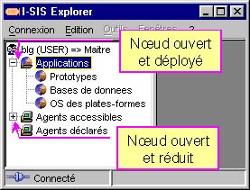

I-SIS Explorer

Guide d'utilisation
|
|
I-SIS Explorer |
|
|
Guide d'utilisation |
||
Un nœud fermé est relié à l'arborescence amont par le connecteur (aucun connecteur sous Linux). S'il est ouvert par une méthode d'exploration, sa branche aval est construite, et son connecteur devient ( sous Linux). En cliquant sur ce dernier, la branche aval disparaît, réduite à l'icône du nœud avec un autre connecteur ( sous Linux) : le nœud reste cependant ouvert et sa branche conservée. D'ailleurs, la méthode d'exploration est sans effet. Il suffit de cliquer sur le connecteur ( sous Linux) pour redéployer la branche aval en son état initial et retrouver le connecteur ( sous Linux).
Cliquez sur un connecteur ( sous Linux) de l'arborescence,
La branche est réduite, le nœud reste ouvert avec un connecteur ( sous Linux),
Cliquez de nouveau sur ce connecteur ( sous Linux),
La branche précédente est redéployée.

Copyright © 2003 BV Associates. Tous droits réservés.